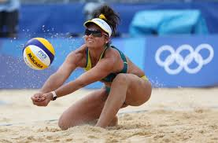

| |
 |
Laukuma izmēri
Volejbola laukums ir vienāds gan sieviešu, gan vīriešu spēlēm, bet tīkls vīriešu spēlēm ir augstāks nekā sieviešu spēlēm. Šie izmēri ir standarta starptautiskajiem volejbola turnīriem un sacensībām visā pasaulē, un tie nodrošina vienlīdzīgas spēles iespējas visiem dalībniekiem neatkarīgi no dzimuma un vecuma.
Vīriešu volejbola laukuma izmēri:
Laukuma garums: 18 metri
Laukuma platums: 9 metri
Tīkla augstums: 2.43 metri
Sieviešu volejbola laukuma izmēri:
Laukuma garums: 18 metri
Laukuma platums: 9 metri
Tīkla augstums: 2.24 metri
| |
| |
Noteikumi
Volejbola galvenais mērķis ir raidīt bumbu pāri tīklam un pretinieka laukumā, vienlaikus neļaujot pretinieku komandai to darīt. Spēlētāji izmanto sitienu, piespēļu, iestatīšanas un bloķēšanas paņēmienu kombināciju, lai kontrolētu bumbu un pārspētu savus pretiniekus. Komanda, kas uzvar rallijā, nopelna punktu un tiesības servēt, un spēles parasti ilgst līdz iepriekš noteiktam punktu vai setu skaitam.
| |
 |